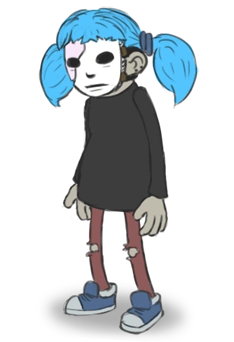
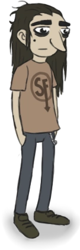
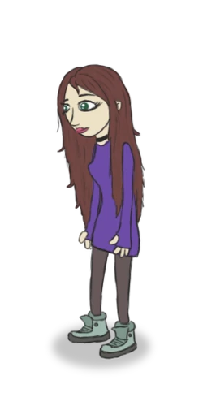
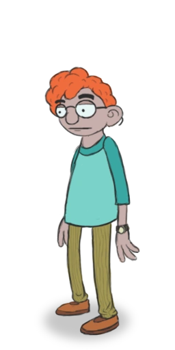

Sal Fisher - znany również jako „Sally Face”, jest tytułowym głównym bohaterem gry. Syn Henry'ego i Diane Fisher. Tragiczny wypadek w dzieciństwie doprowadził do śmierci matki i poważnego okaleczenia jego twarzy, zmuszając go do noszenia protezy. Lata po tym incydencie Sal i jego tata aby rozpocząć nowe życie przeprowadzili się z New Jersey do miasta Nockfell, zamieszkując pod nr. 402 w Apartamentach Addisona

Larry Johnson - jeden z głównych bohaterów gry Sally Face, mieszkaniec Apartamentów Addisona. Najlepszy przyjaciel i przyrodni brat Sala Fishera. Mieszka ze swoją mamą na piętrze 1B, obejmującym piwnice.

Ashley Campbell - Jedna z głównych postaci gry Sally Face. Bliska przyjaciółka Sala Fishera, Larry'ego Johnsona i Todda Morrisona. Ashley jako jedyna z głównych postaci nie zamieszkuje w Apartamentach Addisona

Todd Morrison - mieszkaniec Apartamentów Addisona, chłopak Neila, przyjaciel Ashley Campbell, Sala Fishera i Larry'ego Johnsona. Zajmuje mieszkanie 202 w apartamencie